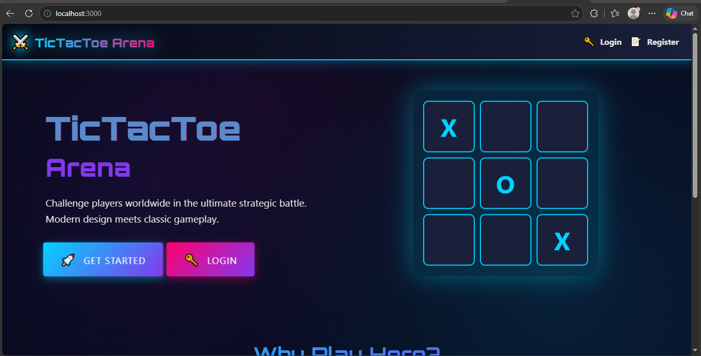

PROJECT 01
Tic-Tac-Toe Web Application
A web-based Tic-Tac-Toe application developed as a CWEB-280 project.
Situation
I worked on a web application project that required building a functional Tic-Tac-Toe game with a frontend and backend.
Task
My goal was to develop the application, connect the different parts of the project, and create a working user experience.
Action
I worked with JavaScript, Vue.js, Node.js, Express.js, and MongoDB. I organized the frontend and backend components, tested functionality, used Git and GitHub for version control, and troubleshot problems during development.
Result
I produced a working project and gained practical experience with full-stack web development, debugging, version control, and connecting different application components.
Project Artifact

This screenshot provides visual evidence of my Tic-Tac-Toe application and demonstrates my experience creating a web-based application.
View Tic-Tac-Toe on GitHub →